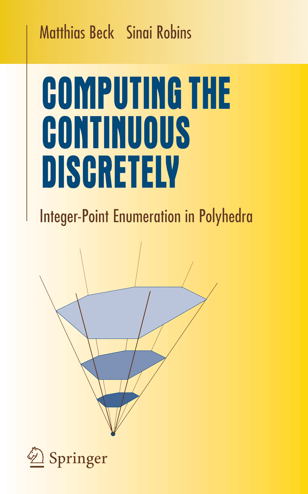

|
Corrections & updates for the first edition
Page 11, Theorem 1.5: What we call "Popoviciu's theorem" should really be called the "Barlow-Popoviciu theorem", since Peter Barlow's 1811 number theory book (p. 323-325) contains a result that is easily seen to be equivalent to Theorem 1.5. [Thanks to Pieter Moree for bringing Barlow's book to our attention.] Page 35: In Theorem 2.5, we need to assume that d > 1 (because Equation (2.10) only holds for d > 1). Pages 36: In the definition of a bipyramid over Q, we need to assume that the origin is contained in Q. Page 77, Exercise 3.12: Delta(d,1) and Delta(d,d-1) are not equal (though they are both regular simplices). Page 79, Exercise 3.30: the difference on the right-hand side should be a sum. Page 88: Matthew Fiset and Alexander Kasprzyk proved a rational version Hibi's palindromic theorem (Theorem 4.6) in Electronic Journal of Combinatorics 15(1), 2008, Note 18. Page 91: Open Problem 4.14 has been solved by Christian Haase, Benjamin Nill, and Sam Payne. Page 102, Exercise 5.10: here we need to assume that P is simple. Page 150, Corollary 8.12: the formulas for the h*-coefficients are not correct. Page 157, second paragraph: "vector space" needs to be replaced by "Z-module." The same applies to the hint for Exercise 3.13 on page 206. Page 160, Section 9.4: in our "second proof of Theorem 3.23," the case r=0 needs to be treated separately. Page 180 & 182, Examples 11.1 & 11.3: each of the cos-1(1/sqrt(3)) is missing a factor of 1/(2 pi). Page 190: Open Problem 11.14 has been solved by Steven Sam. Page 208, hint for Exercise 9.2: the big union in the sixth line should be a big intersection. The links to the math biographies at St. Andrews have unfortunately changed. "Biographies/" needs to be replaced by "Mathematicians/".
|
 |
"The world is continuous, but the mind is discrete."
David Mumford